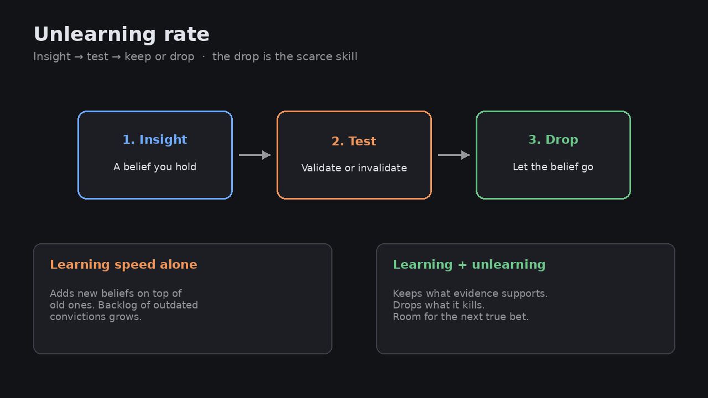

Watch unlearning rate: how fast someone can drop a prior belief
Source: Josh Woodward via Lenny Rachitsky (@joshwoodward / @lennysan)
original post
What it claims
Josh Woodward (Google Labs) says everyone’s talking about growth mindset and learning speed. He watches something different: unlearning rate — how quickly someone can take an insight, validate or invalidate it through testing, and then let it go. The ability to walk away from a prior belief or approach when the evidence says you should is rare, and becoming more valuable as models and tools shift week to week.
Why it matters for a PO
A PO’s job is full of sticky beliefs: the segment that “must” work, the feature that “almost” shipped, the metric that once predicted success. Cheap build and AI make clinging more expensive, not less — you can keep polishing the wrong bet forever. Hiring, coaching, and self-review should ask not only “how fast do they learn?” but “how fast do they drop what is no longer true?”
3 takeaways
- Learning speed without unlearning speed produces a backlog of outdated convictions.
- Unlearning is a loop: insight → test → keep or drop — the drop is the scarce skill.
- In interviews and 1:1s, ask for a belief they abandoned after evidence, not only for wins they shipped.
Practice this week
Pick one in-flight assumption you still defend. Write the cheapest test that could kill it in seven days. If you cannot name the kill test, the belief is stuck — schedule the conversation that would let you drop it.